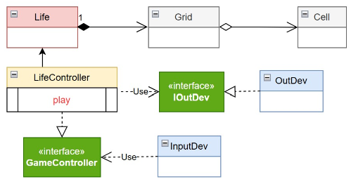

GIT repo: https://github.com/desypellegrini/IngegneriaSistemiSoftware2026.git
GIT repo: https://github.com/desypellegrini/IngegneriaSistemiSoftware2026.git
IOutDev) che permetta di
iniettare diverse implementazioni della vista (Mock, Swing, HTML) a seconda del contesto
di deployment, garantendo il disaccoppiamento tra logica e rappresentazione.

GIT repo: https://github.com/desypellegrini/IngegneriaSistemiSoftware2026.git